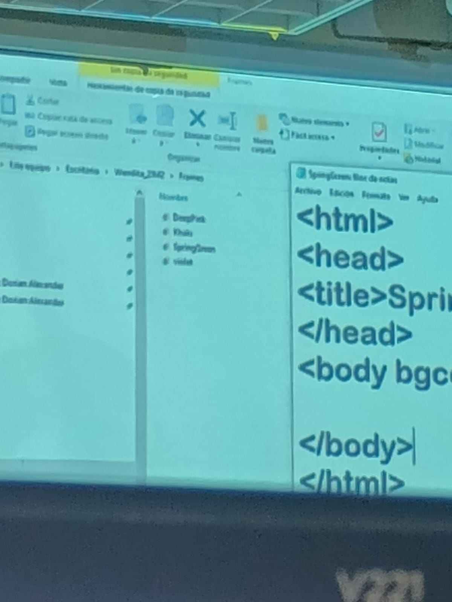

La verdad computación es una de mis materias preferidas, aunque los temas de este semestre estuvieron un poco complicados si te pierdes o distraes, sin embargo es una materia importante para poder usar estas herramientas. Me gustaría poder entrar a la carrera técnica de Computación.
Este semestre en el primer parcial se me hizo fácil pero conforme fuimos avanzando se fue complicando un poco más cuando ibamos terminando con excel, sin embargo el tema del tercer parcial me intereso mucho y creo ha sido el que más me ha gustado.
Es una gran profesora, la verdad su forma de enseñar es buena y fácil de entender, cuando hay dudas te espera y explica hasta que logres tenerlo claro y te ayuda en tus dudas.
|  |